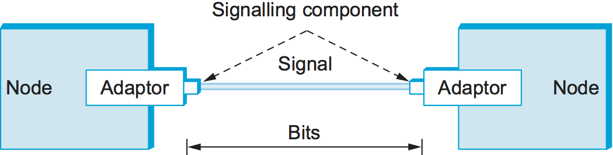
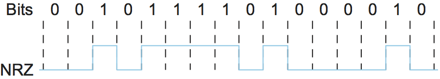
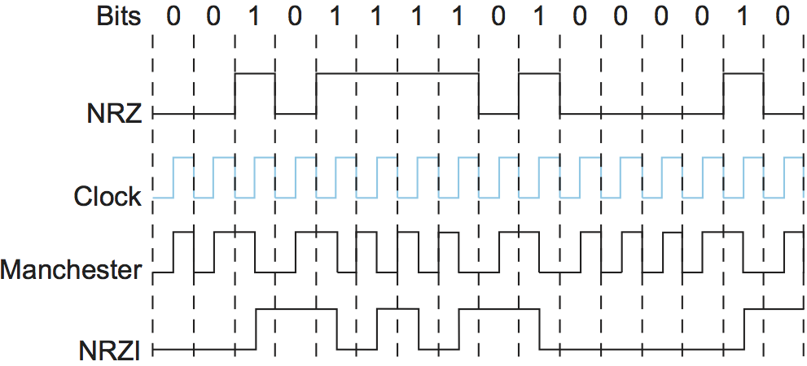

2.2 Encoding
The first step in turning nodes and links into usable building blocks is to understand how to connect them in such a way that bits can be transmitted from one node to the other. As mentioned in the preceding section, signals propagate over physical links. The task, therefore, is to encode the binary data that the source node wants to send into the signals that the links are able to carry and then to decode the signal back into the corresponding binary data at the receiving node. We ignore the details of modulation and assume we are working with two discrete signals: high and low. In practice, these signals might correspond to two different voltages on a copper-based link, two different power levels on an optical link, or two different amplitudes on a radio transmission.
Most of the functions discussed in this chapter are performed by a network adaptor—a piece of hardware that connects a node to a link. The network adaptor contains a signalling component that actually encodes bits into signals at the sending node and decodes signals into bits at the receiving node. Thus, as illustrated in Figure 23, signals travel over a link between two signalling components, and bits flow between network adaptors.
{kind=link}

Figure 23. Signals travel between signalling components; bits flow between adaptors.
Let’s return to the problem of encoding bits onto signals. The obvious thing to do is to map the data value 1 onto the high signal and the data value 0 onto the low signal. This is exactly the mapping used by an encoding scheme called, cryptically enough, non-return to zero (NRZ). For example, Figure 24 schematically depicts the NRZ-encoded signal (bottom) that corresponds to the transmission of a particular sequence of bits (top).
{kind=link}

Figure 24. NRZ encoding of a bit stream.
The problem with NRZ is that a sequence of several consecutive 1s means that the signal stays high on the link for an extended period of time; similarly, several consecutive 0s means that the signal stays low for a long time. There are two fundamental problems caused by long strings of 1s or 0s. The first is that it leads to a situation known as baseline wander. Specifically, the receiver keeps an average of the signal it has seen so far and then uses this average to distinguish between low and high signals. Whenever the signal is significantly lower than this average, the receiver concludes that it has just seen a 0; likewise, a signal that is significantly higher than the average is interpreted to be a 1. The problem, of course, is that too many consecutive 1s or 0s cause this average to change, making it more difficult to detect a significant change in the signal.
The second problem is that frequent transitions from high to low and vice versa are necessary to enable clock recovery. Intuitively, the clock recovery problem is that both the encoding and decoding processes are driven by a clock—every clock cycle the sender transmits a bit and the receiver recovers a bit. The sender’s and the receiver’s clocks have to be precisely synchronized in order for the receiver to recover the same bits the sender transmits. If the receiver’s clock is even slightly faster or slower than the sender’s clock, then it does not correctly decode the signal. You could imagine sending the clock to the receiver over a separate wire, but this is typically avoided because it makes the cost of cabling twice as high. So, instead, the receiver derives the clock from the received signal—the clock recovery process. Whenever the signal changes, such as on a transition from 1 to 0 or from 0 to 1, then the receiver knows it is at a clock cycle boundary, and it can resynchronize itself. However, a long period of time without such a transition leads to clock drift. Thus, clock recovery depends on having lots of transitions in the signal, no matter what data is being sent.
One approach that addresses this problem, called non-return to zero inverted (NRZI), has the sender make a transition from the current signal to encode a 1 and stay at the current signal to encode a 0. This solves the problem of consecutive 1s, but obviously does nothing for consecutive 0s. NRZI is illustrated in Figure 25. An alternative, called Manchester encoding, does a more explicit job of merging the clock with the signal by transmitting the exclusive OR of the NRZ-encoded data and the clock. (Think of the local clock as an internal signal that alternates from low to high; a low/high pair is considered one clock cycle.) The Manchester encoding is also illustrated in Figure 25. Observe that the Manchester encoding results in 0 being encoded as a low-to-high transition and 1 being encoded as a high-to-low transition. Because both 0s and 1s result in a transition to the signal, the clock can be effectively recovered at the receiver. (There is also a variant of the Manchester encoding, called Differential Manchester, in which a 1 is encoded with the first half of the signal equal to the last half of the previous bit’s signal and a 0 is encoded with the first half of the signal opposite to the last half of the previous bit’s signal.)
{kind=link}

Figure 25. Different encoding strategies.
The problem with the Manchester encoding scheme is that it doubles the rate at which signal transitions are made on the link, which means that the receiver has half the time to detect each pulse of the signal. The rate at which the signal changes is called the link’s baud rate. In the case of the Manchester encoding, the bit rate is half the baud rate, so the encoding is considered only 50% efficient. Keep in mind that if the receiver had been able to keep up with the faster baud rate required by the Manchester encoding in Figure 25, then both NRZ and NRZI could have been able to transmit twice as many bits in the same time period.
Note that bit rate isn’t necessarily less than or equal to the baud rate, as the Manchester encoding suggests. If the modulation scheme is able to utilize (and recognize) four different signals, as opposed to just two (e.g., “high” and “low”), then it is possible to encode two bits into each clock interval, resulting in a bit rate that is twice the baud rate. Similarly, being able to modulate among eight different signals means being able to transmit three bits per clock interval. In general, it is important to keep in mind we have over-simplified modulation, which is much more sophisticated than transmitting “high” and “low” signals. It is not uncommon to vary a combination of a signal’s phase and amplitude, making it possible to encode 16 or even 64 different patterns (often called symbols) during each clock interval. QAM (Quadrature Amplitude Modulation) is widely used example of such a modulation scheme.
A final encoding that we consider, called 4B/5B, attempts to address the inefficiency of the Manchester encoding without suffering from the problem of having extended durations of high or low signals. The idea of 4B/5B is to insert extra bits into the bit stream so as to break up long sequences of 0s or 1s. Specifically, every 4 bits of actual data are encoded in a 5-bit code that is then transmitted to the receiver; hence, the name 4B/5B. The 5-bit codes are selected in such a way that each one has no more than one leading 0 and no more than two trailing 0s. Thus, when sent back-to-back, no pair of 5-bit codes results in more than three consecutive 0s being transmitted. The resulting 5-bit codes are then transmitted using the NRZI encoding, which explains why the code is only concerned about consecutive 0s—NRZI already solves the problem of consecutive 1s. Note that the 4B/5B encoding results in 80% efficiency.
4-bit Data Symbol |
5-bit Code |
|---|---|
0000 |
11110 |
0001 |
01001 |
0010 |
10100 |
0011 |
10101 |
0100 |
01010 |
0101 |
01011 |
0110 |
01110 |
0111 |
01111 |
1000 |
10010 |
1001 |
10011 |
1010 |
10110 |
1011 |
10111 |
1100 |
11010 |
1101 |
11011 |
1110 |
11100 |
1111 |
11101 |
Table 3 gives the 5-bit codes that correspond
to each of the
16 possible 4-bit data symbols. Notice that since 5 bits are enough to
encode 32 different codes, and we are using only 16 of these for data,
there are 16 codes left over that we can use for other purposes. Of
these, code 11111 is used when the line is idle, code 00000
corresponds to when the line is dead, and 00100 is interpreted to
mean halt. Of the remaining 13 codes, 7 of them are not valid because
they violate the “one leading 0, two trailing 0s,” rule, and the other 6
represent various control symbols. Some of the framing protocols
described later in this chapter make use of these control symbols.